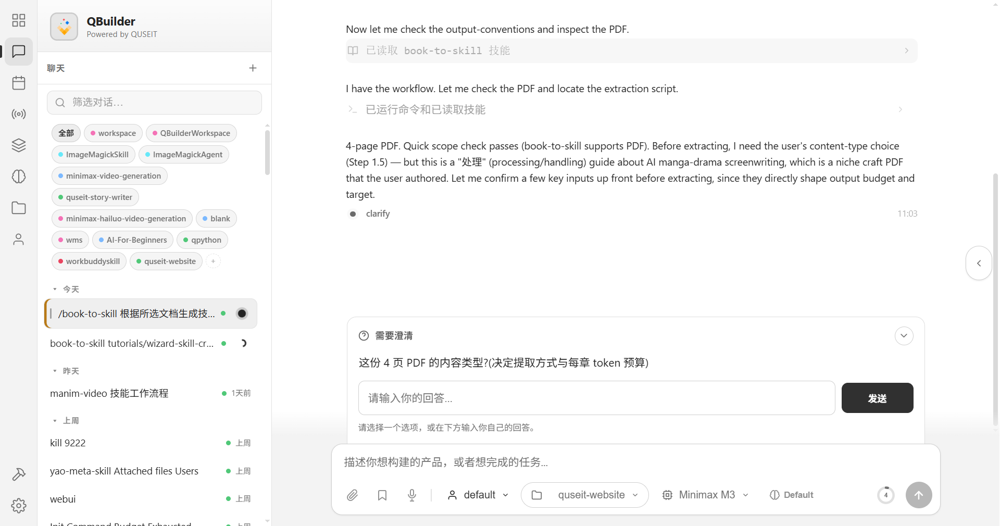
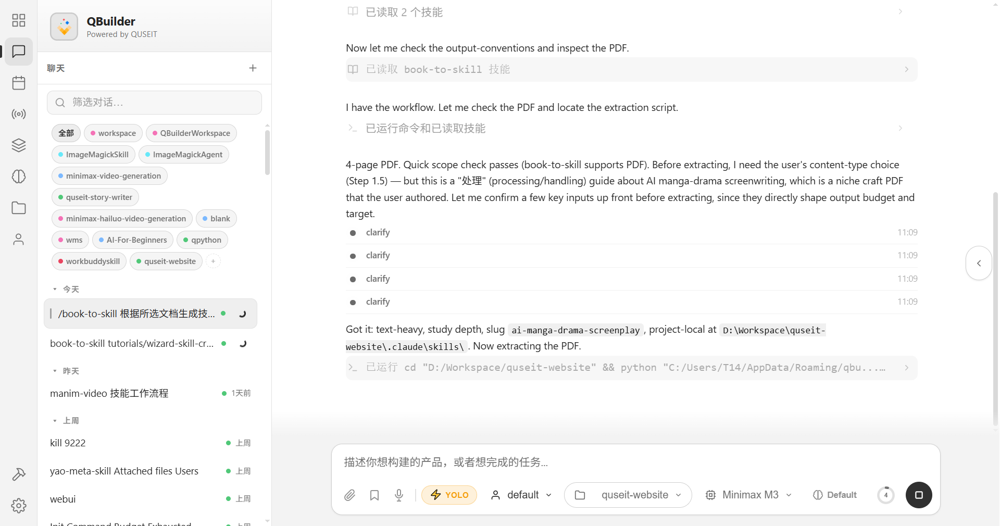
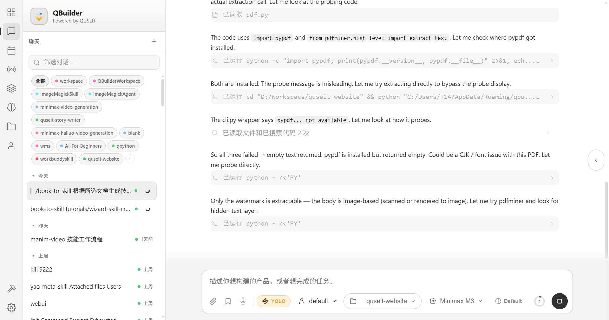
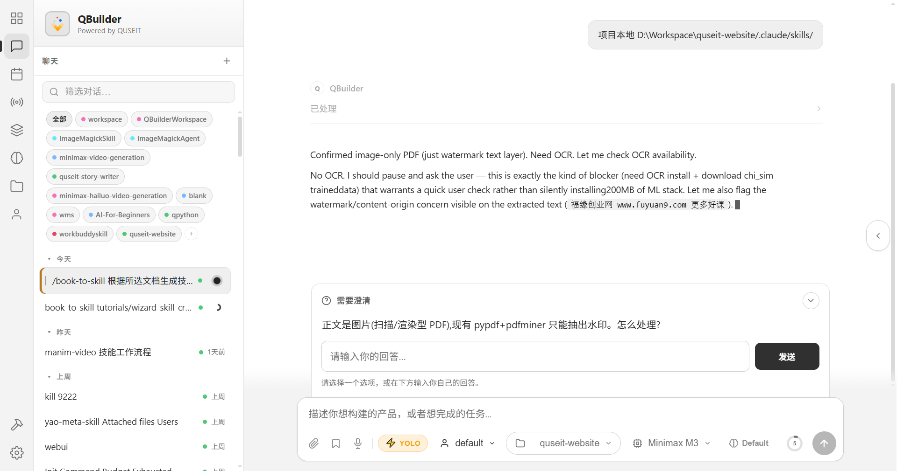

用 book-to-skill 把文档转为智能体技能
在 QBuilder Desktop 里,走多轮澄清 + ⚡ YOLO 模式,把你手里那份文档(PDF / Markdown / EPUB)转为可加载的智能体技能。本教程以一份 4 页扫描型 PDF 为真实案例,带你看到 book-to-skill 的 11 步流水线在 Desktop 里是如何被压成几张卡片对话的。
book-to-skill 的 11 步流水线在 Desktop 里是如何被压成 5 张澄清卡片的,以及遇到扫描型 PDF 时 AI 会怎么停下来等你拍板。
流程一览
整个过程分两大段:
- 第 1–3 步:在 Desktop 里把 PDF 拖进输入框、点卡片选 "从文档生成技能",走完 5 轮澄清(内容类型 / DEPTH / slug / SKILLS_HOME / OCR 决策)。
- 第 4–6 步:AI 在后台调用
book-to-skill技能,产出符合生产规范的技能包。
关键观察:book-to-skill 在 CLI 模式下要打字问 Step 1.5/4/5,Desktop 里这三步被压成 3 张澄清卡片(需要澄清),写两三个字就能跳到下一步。但 blocker 仍会拦你 — 比如这次碰到扫描型 PDF,AI 就主动停下来问 OCR 怎么处理。
第 1 步 · 选 "从文档生成技能" 入口
登录 → Dashboard → 上传 PDF
~1 分钟1.1 找到 "从文档生成技能" 卡片
Dashboard 上半区的 "技能构建" 分类里有 4 张入口卡,第二张就是 从文档生成技能。
1.2 点击卡片 → prompt 自动预填
点击后,任务模板 /book-to-skill 根据所选文档生成技能 会自动填进输入框。你也可以手动改写,但保留这个开头能让 AI 路由到正确的技能。
第 2 步 · 卡片触发 → 输入框自动填写
点 "从文档生成技能" → prompt 预填
~30 秒2.1 卡片点击 → 输入框自动出现预设提示词
点击 "从文档生成技能" 卡片后,任务模板 /book-to-skill 根据所选文档生成技能 会自动填进输入框 — 这个预设提示词就是调用 book-to-skill 技能的入口。
你也可以手动改写,但保留这个开头能让 AI 路由到正确的技能。改写时建议保留 /book-to-skill 这个技能路径前缀。
book-to-skill 技能,而不是走通用对话。如果你手写了更长提示词但忘了带前缀,AI 也可能猜到要做技能蒸馏,但保留前缀是最稳的。
2.2 上传文档 → 附件栏出现附件标签
输入框左下角有一排图标按钮,第一个形状像回形针的就是上传附件按钮。点击它可以选择想要转化为技能的文档。
选完文档之后,输入框上方会出现附件栏,文件名 + 大小会显示成一张小卡片(叫 "附件标签")。
第 3 步 · 发送 → 多轮澄清对话
关键:你的回答决定 book-to-skill 创建出来的技能
~3–5 分钟附件挂好后,点右下角的 ↑ 按钮发送。Desktop 会自动加载 book-to-skill 技能、读 PDF 摘要,然后抛出第一张澄清卡片。

3.1 理解澄清卡片分别问什么
book-to-skill 把需要从你上传的PDF文件所需要提前了解的内容,压成几张桌面卡片(需要澄清),你只需要在输入框写一句话提交。
| 轮次 | 对应 book-to-skill 工作流 | 回答方向示例 |
|---|---|---|
| 澄清 #1 | Step 1.5 内容类型 | 将文章按照漫剧剧本来处理 |
| 澄清 #2 | Step 4 DEPTH(study / reference) | 让 agent 按框架生成漫剧剧本,所以 DEPTH=study |
| 澄清 #3 | Step 5 技能 slug | ai-manga-drama-screenplay |
| 澄清 #4 | Step 5 SKILLS_HOME | <工作区>/skills/ |
| 澄清 #5 | Step 6 blocker(扫描型 PDF 等) | 取决于 PDF 类型(详见 第 5 步) |
3.2 回答时该说什么 — 三条原则
- 具体优于抽象: 不要说"按用途处理",说"按漫剧剧本处理" — AI 会从你的用词里推断提取策略、章结构、术语保留方式。
- 明确 DEPTH 取舍: 如果你的目标是让 agent 真正"按框架做事",答 DEPTH=study(每章更详尽 + 复现 Worked Example);如果只是"参考一下",DEPTH=reference 更省 token。
- slug 反映文档核心: 用小写连字符的英文短语,反映文档核心用途,例:
ai-manga-drama-screenplay/cialdini-influence。
3.3 5 轮走完 → 工具栏出现 ⚡ YOLO
5 轮澄清答完后,工具栏会出现 ⚡ YOLO 橙色 chip — 这是 Desktop 的"本次会话全部跳过审批"开关。book-to-skill 后续会调用 extract.py、生成章文件等,每一步都可能弹审批对话框,打开 YOLO 让它们自动放行。

Default reasoning 强度建议保持默认 — book-to-skill 的 11 步流水线会自己决定要不要切 REPL,不需要你提前调参数。
第 4 步 · AI 后台跑 book-to-skill 流水线
检测 PDF 类型 → 抽取文本 → 生成产物
~30 秒–2 分钟5 轮澄清走完后,AI 自动调用 book-to-skill 技能,按工作流 Step 6–11 推进:用 extract.py 抽 PDF 文本、决定 token 预算、生成章文件、做安全扫描、写治理文件、出审计报告。
4.1 依赖探测链
AI 会按 pypdf → pdfminer.six → OCR 的顺序逐个探测 — 这些对话流会显示在主区域。

--install-missing 标志管理安装,但碰到 OCR 这种 200MB+ ML 套件时,会主动停下来等你拍板 — 而不是默默装盘。
踩坑提示 · 扫描型 PDF 抽不出正文时怎么办
你以为的"文字 PDF",其实是图片
~1 分钟看清 + 决策5.1 现场:抽出来的全是水印
如果你拿的是扫描型 PDF(本次教程用的素材 02-AI漫剧剧本的处理.pdf 就是),book-to-skill 跑到 Step 6 时会撞墙 — extract.py 只能抽到某些水印文字(108 字符)。正文是图像,没有任何文本层。

AI 不会自己装 OCR 套件 — 它会停下来抛出第 5 张澄清卡片:
正文是图片(扫描/渲染型 PDF),现有 pypdf + pdfminer 只能抽出水印。怎么处理?
5.2 三个方向 — 选一个,继续
- 装 Tesseract + chi_sim traineddata(约 200MB)→ AI 重跑 OCR 把图像转成文本。适合 PDF 不大且对识别精度有要求的情况。
- 提供文本版本(Markdown / TXT)→ 让 AI 直接用 fast extractor 跳过 OCR,产物生成速度最快。
- 跳过 extract → AI 基于 PDF 元信息(标题 / 作者 / 页数)生成一个"内容待补"占位技能,后续你手动填章节。
5.3 本次是怎么解决的
我选了第二个方向 — 自己在输入框写 提供文本版本,我自己先把 PDF 转 Markdown。book-to-skill 拿到这个回答后不再要求 OCR,而是等待我在下一步把文本版本附上(或直接放弃该 PDF,改用其它已结构化的素材)。
5.4 这次踩坑的收获
- 扫描型 PDF 不能默默跑 OCR: book-to-skill 拒绝默默装 200MB 套件,主动上报并让你拍板 — 这就是它"诚实边界"的体现。
- 提前 OCR 比事后处理更省事: 如果你手里是扫描件,先用本地工具(Adobe / WPS / OneNote)把 PDF 转成可复制的文本,再交给 book-to-skill,跳过整个 blocker。
- watermark 是内容来源的指纹: 即使正文抽不出来,水印本身也是一条溯源线索 — book-to-skill 会把它写进 SKILL.md 的"诚实边界"段,作为版权声明的一部分。
第 6 步 · 技能包落到 workspace
检查 <工作区>/skills/<slug>/ 目录
~30 秒–3 分钟blocker 解开(或跳过)后,AI 在后台继续走完 book-to-skill 工作流的剩余步骤 — 生成章文件、做安全扫描、写治理文件、出审计报告。
6.1 看文件系统最快
在你的 workspace 根目录(例如 D:\Workspace\quseit-website\)下,刷新文件管理器:
D:\Workspace\quseit-website> dir skills\
[新目录] ai-manga-drama-screenplay\6.2 book-to-skill 产出的标准结构
目录里会按 yao-meta-skill 生产布局落盘:
skills/ai-manga-drama-screenplay/
├── SKILL.md triggers + boundary + 5 框架一行式
├── README.md package map
├── manifest.json 治理元数据
├── agents/interface.yaml 跨平台适配
├── security/permission_policy.json install-simulate 闸门
├── references/
│ ├── glossary.md 全术语
│ ├── patterns.md 漫剧生成模式
│ ├── cheatsheet.md 决策规则 / 取舍矩阵
│ └── chapters/ PDF 章节摘要(图像型 PDF 待 OCR)
└── reports/ 4 份 .md 审计 + 2 份 .htmlyao install-simulate 验证、发布到 hub、装到任何 Agent Skills 主机。
最终结果
走完这 6 步,你会在 workspace 里得到:
- 完整的 SKILL.md(含触发词 + 红线 + 诚实边界)
- 面向用户的 README.md(quick start + 排除项)
- 治理元数据 manifest.json(版本 / 来源 / 加载策略)
- yao 兼容 agents/interface.yaml + security/permission_policy.json
- 按需加载 references/{glossary,patterns,cheatsheet,chapters/}
- 审计证据 reports/(4 份 .md + 2 份 .html)
它的能力会被 Desktop 全局识别,以后你可以直接用日常语言("按我这份漫剧 PDF 的格式,生成一集新剧本")触发它。
常见踩坑
- 扫描型 PDF 默默装 200MB OCR 套件: book-to-skill 不会。AI 会在抽出失败时主动停下来问你 — 你看到的"水印 + 正文是图片"提示就是它的诚实边界声明。
- extract.py 探测结果误导:
--install-missing no会跳过交互安装,但内部 probe 跟实际 import 偶尔会不一致。AI 看到 probe 失败后会直接绕过 probe 重跑 — 你不需要手动干预。 - 审批弹窗反复弹: 在工具条里打开 ⚡ YOLO(slug 提交后会提示),本次会话所有 subprocess 命令自动放行。